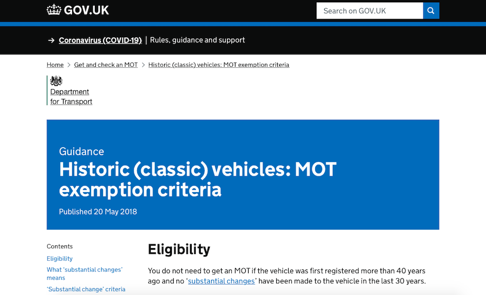
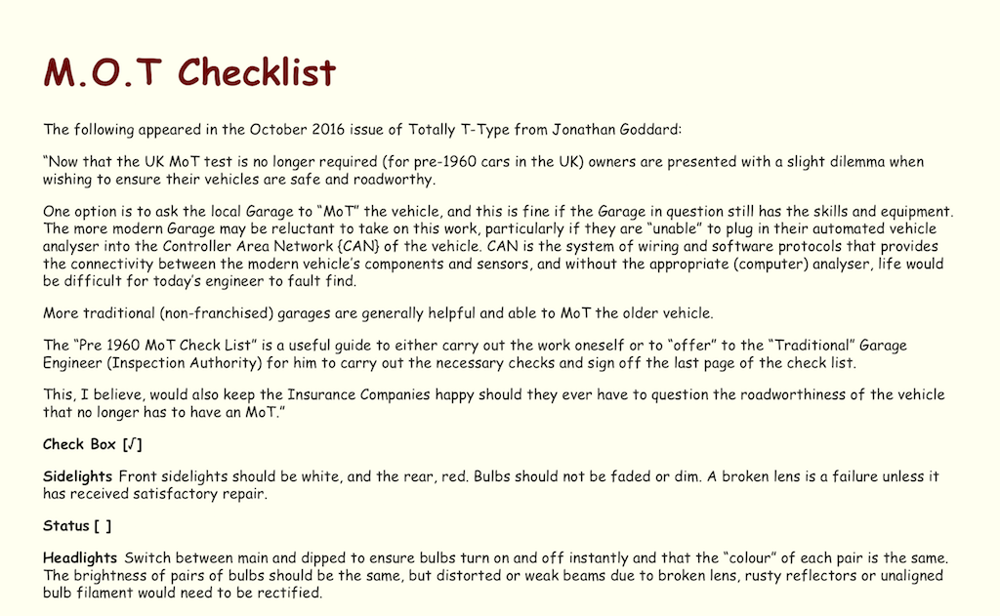
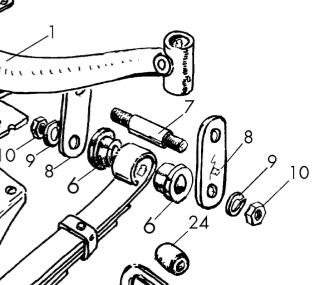

According to the UK Government web site, if 'the vehicle was built or first registered more than 40 years ago' then it does not need an MOT test certificate. So as I write, a car built before 1981 is MOT test exempt. That means that many of the cars owned by club members are old enough (the cars, not the members) to not require an MOT test certificate. I have always assumed it is thought that owners of 'heritage' cars take extra special care of them. However, it does leave us owners with a dilemma. Do we rely on our judgement about the safety of our cars or do we get them 'professionally' tested?
Some friends, with even older cars than mine, put their vehicles through a full MOT check. The danger, as some have found, is that a failure leaves them in a difficult position. They need to get the problem fixed and the car retested before they can take it on the road, other than to take it to be tested.
When I bought TC4985 in 2015 it had no MOT test certificate, but the brakes locked on after driving about ten miles. So I took the car to a local garage to have the chassis, suspension and brakes checked. Since then I've followed an MOT test checklist that was published in an online T-Series magazine to help keep the car roadworthy. However, I did find that a previous owner had polyurethane the steering knuckles (that rotate around the king pins) on the wrong sides. One has a left-hand thread so that a forward rotating wheel tends to tighten the nut holding the hub on the stub-axle. So I thought it was time to let a professional give the car a once-over.
My wish was to essentially have an MOT test performed, but without formally putting the car through the formal test. Initially I thought I should take the car to someone with experience of working on classic cars. I asked myself how many mechanics, working in a garage that services/repairs modern cars, would be familiar with a beam axle and leaf springs, let alone a Bishop Cam steering box? If they look for a CAN-bus socket into which they can plug their computer then they will be disappointed. So I searched for local companies that claimed to restore classic cars. I knew of one in Cowfold who are said to be good, but expensive, but found one in Small Dole and another in Albourne. The former specialised in VW camper vans, so I decided to check out the one in Albourne first.
It was a fine, sunny day, ideal for a run in the TC. Finding the industrial estate in Albourne was easy enough, but finding the 'restorer' was more difficult. The estate was dominated by a scrap metal merchant and the rest of the site looked as though it was an extension of their yard. After a little drive around I found a small tin hut, with one car inside and another parked outside, both in the process of being 'restored'. They clearly were not an MOT station, although their web site said they could provide a test, and the two people (who were having a tea break) instilled as much confidence as the surroundings. Although they said they could do a safety check, they wanted to keep the car for a 'couple of days'! There was no way that I was going to let them get near my TC, let alone leave it in that environment overnight. So I said I would let them know and set off for Small Dole, avoiding the lorries of scrap metal pulling into the estate.
This time the farmyard that had some industrial units was more difficult to find. After going down several very pot-holed narrow lanes (and meeting a tractor on one of them) I found the yard, but the building, that I recognised from their web site, was locked up, with no signage. Presumable there were not enough VW camper vans in need of restoration to keep them in business. Although I'd not been successful in my quest, I had a good outing in the TC and it ran well.
Prior to my little trip I had asked another T-Series owner, who is a club member, where they took their car for an 'MOT type' check. I discovered that they went to a local garage and found them very helpful. We take our Fiat Panda to the local garage in Steyning, so I phoned them to see if they could do what I wanted on the TC. To my surprise they were quite enthusiastic about the idea, arranging a period when they would have more time and booking the car in for an MOT, but without registering it as such, so that I only paid the MOT fee rather than their normal hourly rate.
So what was my experience? When I took the car to them (they are only a 15 minute walk from home) they had a Lotus Elan and a VW camper van in for some work and the owner, it seems, has a Mark 1 MX5. Good signs. Then, when I went to collect the car, it was still on the lift so that the mechanic could show me the couple of minor points that he had found. A bolt on the steering box was loose (which he tightened while we were under the car), there was a slight play in one of the front spring bushes (item 6 in the diagram), but none in the one on the other side and he noticed one cotter on a king pin had a couple of washers under the nut as spacers. I had replaced the spring rubber bushes towards the end of 2016 with modern polyurethane versions, so am happy with those, and I knew about the cotter and plan to replace the king pins (clearly one side is different to the other).
So overall I was very happy that nothing was found that wold fail an MOT test and also reassured that my checks on the car seem to cover what is necessary. As a consequence of this experience I would recommend taking a 'heritage' car to a well established local garage for a safety check, as long as you are reasonably confident that the mechanics are sympathetic to our type of cars. I'll certainly be going back to the Steyning garage for both cars.
© David James 2020 Last updated: 16th July 2021